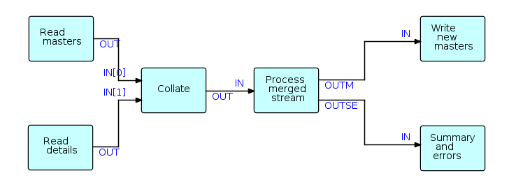

Examples
Telegram Problem
FBP components often form complementary pairs. This example uses two such pairs. The problem described seems very simple as described in words, but in fact is surprisingly hard to do using conventional procedural logic. The task, called the "Telegram Problem", originally described by Peter Naur, is to write a program which accepts lines of text and generates output lines of a different length, without splitting any of the words in the text (we assume no word is longer than the size of the output lines).
In conventional logic, the programmer rapidly discovers that neither the input nor the output structures can be used to drive the call hierarchy of control flow. In FBP, on the other hand, the problem description itself suggests a solution:
- "Words" are mentioned explicitly in the description of the problem, so it is reasonable for the designer to treat words as information packets (IPs),
- In FBP there is no single call hierarchy, so the programmer is not tempted to force a subpattern of the solution to be the top level.
Here is the most natural solution in FBP (there is no single "correct" solution in FBP, but this seems like a natural fit):
As mentioned above, Initial Information Packets (IIPs) can be used to specify parametric information such as the desired output record length (required by the rightmost two components), or file names. IIPs are data chunks associated with a port in the network definition which become "normal" IPs when a "receive" is issued for the relevant port.
Batch update
This type of program involves passing a file of "details" (changes, adds and deletes) against a "master file", and producing (at least) an updated master file, and one or more reports. Update programs are generally quite hard to code using synchronous, procedural code, as two (sometimes more) input streams have to be kept synchronized, even though there may be masters without corresponding details, or vice versa.

In FBP, a reusable component (Collate), based on the unit record idea of a Collator, makes writing this type of application much easier as Collate merges the two streams and inserts bracket IPs to indicate grouping levels, significantly simplifying the downstream logic. Suppose that one stream ("masters" in this case) consists of IPs with key values of 1, 2 and 3, and the second stream IPs ("details") have key values of 11, 12, 21, 31, 32, 33 and 41, where the first digit corresponds to the master key values. Using bracket characters to represent "bracket" IPs, the collated output stream will be as follows:
( m1 d11 d12 ) ( m2 d21 ) ( m3 d31 d32 d33 ) (d41)
As there was no master with a value of 4, the last group consists of a single detail (plus brackets).
The structure of the above stream can be described succinctly using a BNF-like notation such as:
{ ( [m] d* ) }*
Collate is a reusable black box which only needs to know where the control fields are in its incoming IPs (even this is not strictly necessary as transformer processes can be inserted upstream to place the control fields in standard locations), and can in fact be generalized to any number of input streams, and any depth of bracket nesting. Collate uses an array-type port for input, allowing a variable number of input streams.
Multiplexing processes
Flow-Based Programming supports process multiplexing in a very natural way. Since components are read-only, any number of instances of a given component ("processes") can run asynchronously with each other.
When computers usually had a single processor, this was useful when a lot of I/O was going on; now that machines usually have multiple processors, this is starting to become useful when processes are CPU-intensive as well. The diagram in this section shows a single "Load Balancer" process distributing data between 3 processes, labeled S1, S2 and S3, respectively, which are instances of a single component, which in turn feed into a single process on a "first-come, first served" basis.
Simple interactive network

In this general schematic, requests (transactions) coming from users enter the diagram at the upper left, and responses are returned at the lower left. The "back ends" (on the right side) communicate with systems at other sites, e.g. using CORBA, MQSeries, etc. The cross-connections represent requests that do not need to go to the back ends, or requests that have to cycle through the network more than once before being returned to the user.
As different requests may use different back-ends, and may require differing amounts of time for the back-ends (if used) to process them, provision must be made to relate returned data to the appropriate requesting transactions, e.g. hash tables or caches.
The above diagram is schematic in the sense that the final application may contain many more processes: processes may be inserted between other processes to manage caches, display connection traffic, monitor throughput, etc. Also the blocks in the diagram may represent "subnets" - small networks with one or more open connections.